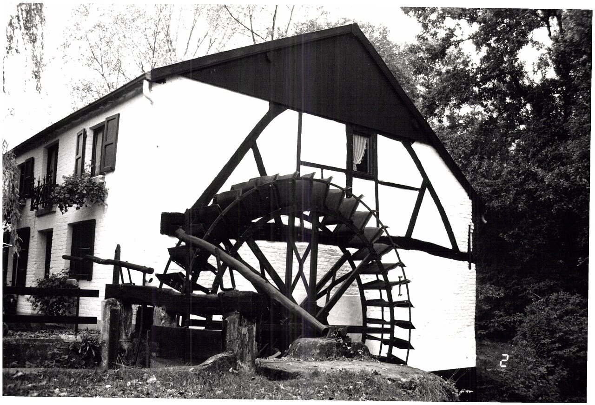
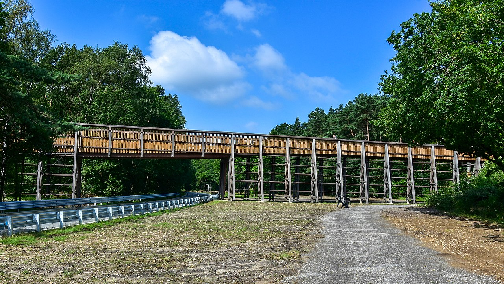
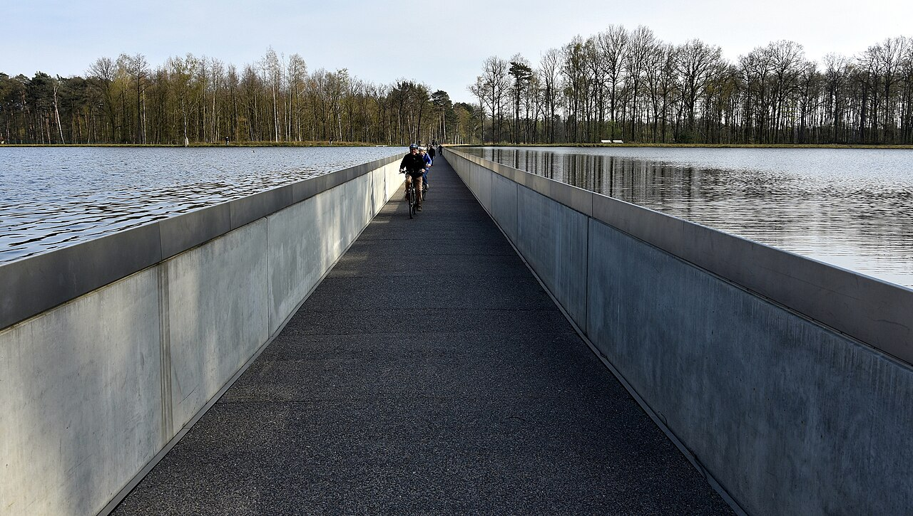
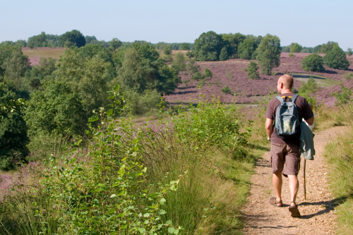
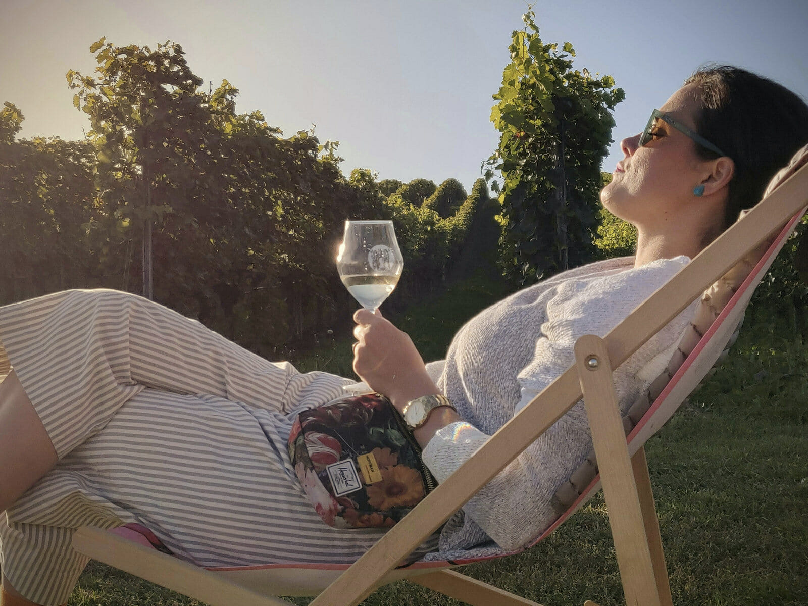

A Weekend at
Slagmolen
A 1511-mentioned watermill, restored 1685, now serving a two-Michelin-star tasting menu. Four villa rooms above the kitchen. Everything else — heath, bridges, museums — within day-trip reach of the dinner table.

"The establishment boasts four deluxe rooms to prolong the evening in style."[1]
Slagmolen's own four rooms sit on the same parcel as the kitchen — zero walk, zero cab, zero wine-pairing risk[2]. They sell out. Treat this call as the trip's load-bearing constraint. Everything below assumes it has been made.
The walking-radius answer is essentially binary. Inside 2 km of the watermill, you have exactly two beds. Outside that, taxis. Below: the eight stays worth ranking.[4]
Four luxury rooms in the adjacent villa, conceived "to prolong the evening in style"[1]. Same parcel as the dining room — no taxi, no driving, no negotiation with the wine pairing. Breakfast and minibar included[2].
A designer-host B&B run by Wendy and Tom as a private showroom — each room its own scheme, with an indoor plunge pool, sauna and sanarium available as private wellness[5]. ⚠ Route runs along rural Limburg roads — walk in daylight or cab back at night.
A chaplain's residence dating to 1736, converted into a one-Michelin-star hotel-restaurant[7]. Catch: rooms sold only paired with dinner[8] — so this is a Sunday-night-after-Slagmolen play, not a Saturday bed-only.
Renovated 4-star in the centre of As, the village from which Station As (Hoge Kempen's industrial-heritage gateway) launches its derrick-tower trails[10]. Cleanest taxi-distance fallback if the villa and Bed and Beyond are full.
A sooty-black design hotel in tribute to Genk's coal-mining past, with a fifth-floor Carbon Sense City Spa and Restaurant Gusto on-site[11]. Two minutes from Genk station — so the Sunday exit can be train-and-shuttle rather than cab.
Around 37 cosy cabins, a Hobbit House and wellness lodges in woodland on the edge of Hoge Kempen[12]. The stated principle is back-to-nature; treetrunks-with-hot-tub list at €822 / 3 nights. ⚠ Best as a 2–3 night base — the park is the point.
Six rooms with B&B charm but hotel standards, attached private wellness (sauna, jacuzzi, outdoor pool) and a refined restaurant accessible only to hotel guests[13] — a quiet Sunday-lunch fallback if you over-indexed the night before.
A small castle hotel ranked #1 of 2 hotels in Maaseik, with atmospheric rooms in landscaped grounds and the Wintergarden restaurant on-site[14]. ⚠ The building delivers; operational reviews are uneven — pick based on building, not service.

Fietsen door de Heide

Fietsen door het Water

Mechelse Heide
C-Mine Expedition

Wijndomein Aldeneyck

Duinengordel
Open-air museum
11 saunas · 8 baths
Elaisa Energetic Wellness
Village · outlet
Maasmechelen Village
If the weekend is pinned to a working week
Tech-conference dates inside the 30-km arc, 2026 — useful for stretching a Saturday tasting into a full week of meetings.
BSides Limburg runs Thursday–Friday, 12–13 March, at Corda Campus in Hasselt — the closest "real" IT conference inside the radius. Community-driven cybersecurity; workshops day one, talks day two[37]. A Saturday tasting is the natural extension.
IEEE WCCI 2026 arrives at MECC Maastricht 21–26 June — three IEEE conferences (IJCNN, FUZZ-IEEE, CEC) bundled, roughly 1500 attendees, with a new Industry Day component. At ~25 km this is genuinely commutable from a Slagmolen villa room[38].
BNAIC / BeNeLearn 2026 is the 38th Benelux AI conference, 21–23 October at Maastricht University — smaller, more academic, the reference event for the regional AI/ML community[39].
FTI Festival 2026, the Flanders Technology & Innovation festival, runs 16 October – 15 November. Hasselt and Genk together form the Limburg pillar, anchored on Corda Campus and Thor Park[40].
Closest of all — Thor Park / EnergyVille in Genk, ~10 km, runs a rolling "Powering the Future" series of half-day workshops throughout 2026[41]. The Brightlands AI programme in Heerlen (NL) sits on the arc's edge[42].
- Call +32 89 85 48 88 — ask for a villa room and the Saturday table in one breath[2]
- Confirm the tasting price, wine-pairing, dress code and meal length on that same call
- If the rooms are gone — book Bed and Beyond (1.6 km, walking) or Hotel Mardaga (4.3 km, cab)[4]
- Pre-book a local cab when you confirm — Uber thins out after dark in Opglabbeek[6]
- If lunching on Sunday — call Hostellerie Vivendum for the 13:00 service[7]
- If cycling the bridges — pick up at any Fietsparadijs Limburg hub (Bokrijk, Station As, Kattevennen…)
- Pack: walking shoes for the heath, something for dinner that respects two stars